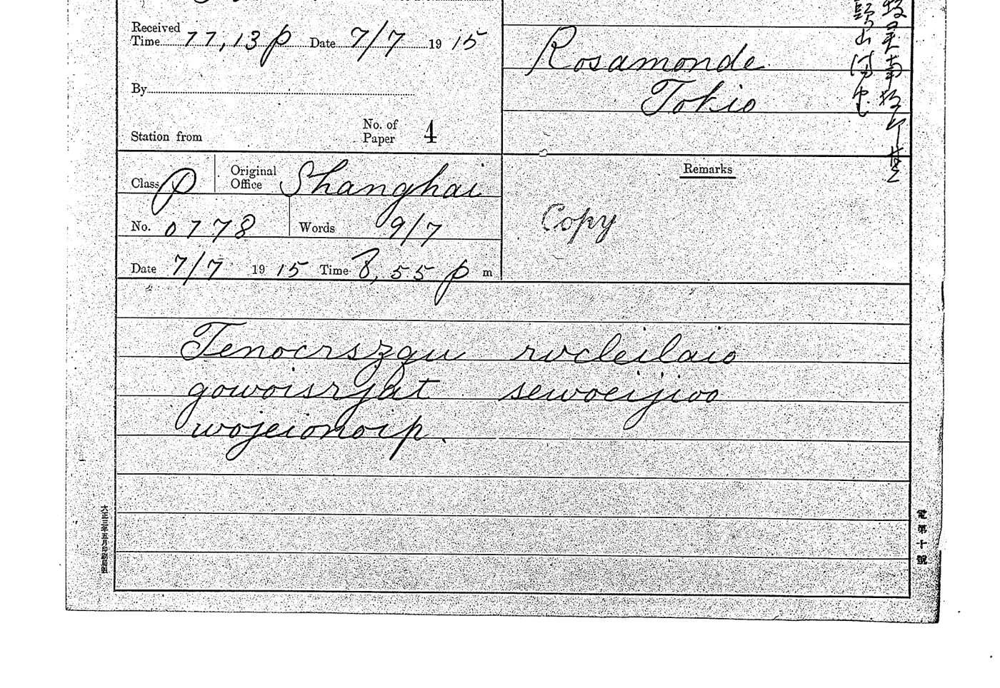

第二篇 · 技术报告
破解文密：从字母结构到两把无参数的密钥
如何从“fazihipego wezelucuna”走到“報傳取消日人態度遽變”：转写、三十次计算（大多以失败告终）、一个改变全局的简单统计检验，以及两把各用一行就能写完的密钥。
加点线下划线的内容为尚未证实的推测。
同为拉丁字母，密码系统却不同
公开中文电码是一种编码步骤，本身并非秘密。1916年的文密采用两张特定的表，将数字转换为音节。
Rosamonde · 1915–1916
英文字母互易替换you ↔ hea一个字母替换另一个字母；同一张表既用于加密，也用于解密。
中文电码
汉字公开的四位数字码表文 → 2429码表是公开的，单凭这一步无法隐藏内容。
压缩电码 · 多张码表
四位中文电码两组两位数字 → 音节00–99 → CV不同系统使用不同码表。CV表示辅音加元音。
文密 1916 · G0 / Y0
四位中文电码两张不同的音节表報 → 1032 → fa | zi仅为G0示例。Y0使用另一张表，不能互换。
概要：加密系统
1916年的两条通道都按五步加密，没有现代意义上的秘密密钥。以东京 → 肇庆一路（1916年6月至9月）为例：
G0 表给 00 到 99 的每个数指定一个“辅音 + 元音”音节。辅音从 h 开始按字母倒序排列（h g f d c b z y x w v t s r q p n m l k），每个十位两个辅音；元音 a e i o u 表示个位，第一个辅音按升序、第二个按降序（蛇形排列）：
于是 ha = 00，hu = 04，gu = 05，ga = 09，fa = 10……ka = 99。用 Python 写：
ORDER, V = "hgfdcbzyxwvtsrqpnmlk", "aeiou"
G0 = {c + v: 10 * (i // 2) + (j if i % 2 == 0 else 9 - j)
for i, c in enumerate(ORDER) for j, v in enumerate(V)}
def decode(letters): # "fazihipego..." -> ["1032", "0278", ...]
s = [letters[k:k+2] for k in range(0, len(letters), 2)]
return ["%02d%02d" % (G0[a], G0[b]) for a, b in zip(s[::2], s[1::2])]每封电报以署名“伸”（heyu = 0135）结尾，有时为“伸令”，其后是日期，或用韵目代日（巧 十八日、漾 二十三日、元 十三日……），或用数字（卅 三十日）。
动手试试
选择一封电报，点击任一汉字或开始逐字演示：对应的两个音节会在密文以及电报下方显示的密钥表格中高亮。两条通道均可选择（G0 与 Y0）。橙色虚线框的字为存疑字（电报纸字迹不确定或为罕用字）。
每格依次为：音节 · 电码 · 汉字。
起点：已发表的研究
起点是《Sun Yat-sen's circle on the wire, 1916–17》[1]及代码库 dbourdeau/cyphersolver[2]：其中公开了电报纸的转写，以及孙中山周围人物约六十封电报的破译。这些电报使用的“压缩表”与 S. Tomokiyo 在 Cryptiana 上公布的山田纯三郎压缩表一脉相承[8]：20个辅音和5个元音，共100个音节，00—99 每个数对应一个。
赵伸的密电与之不同：十字母一词，看不出加数；文中曾将其列为尚未解决的问题[1]。军务院一路的电报多以明码前缀 2429 1378 开头，读作“文密”，即这套密码的名称；他发往云南的电报构造相同但有六个元音，开头是标记“Cg”。我们从已确认的档案与转写出发，并沿用“半个电码对应一个音节”的思路。下文将说明：东京发出的电报所用的表其实遵循一条简单规则——字母倒序，每十个数两个辅音，元音蛇形排列。
规则
历史破译是自欺的理想温床：参数足够多时，任何噪声里都能“读出”中文。因此我们在事先确定的规则下工作，并记录在只增不改的日志中（近1,400行，共31次研究）：
- 资料不可改动。JACAR 的 PDF 原样保存，并记录 SHA-256 校验值；每一次新的转写都是新的版本文件。
- 一封留出电报。0406号电报（1916年7月12日）从未用于调整密钥或修改读法，只用于评判。
- 不用“明文猜测”。从未把任何猜想的词（人名、套语）强加到明文中。只用日本职员在电报纸上以明文写下的日期作为锚点，并测试了多组锚点。
- 正对照与零对照。每次搜索同时在一段已知中文文本（用同类型的已知密钥加密，求解器必须找回密钥）和打乱后的数据（求解器不应找到任何东西）上运行。档案上的得分只有与这两个基准相比才有意义。
- 多个随机种子。只有从不同随机起点得到完全相同的最优解时才予以采纳。
- 状态明确。每个结果都标注为：事实、假设、否定检验、候选、已印证。
第一步 —— 读出职员写下的字母
从电报单到含义：一个真实例子
Rosamonde，上海 → 东京，1915年7月7日。这里使用英文替换密码，而非文密的G0表。
1 · 原始史料

JACAR所藏日方抄件：B03050087700，图像50。点击放大。
2 · 转录字母组
gowoisrjat3 · 应用替换表
g o w o i s r j a t ↕ b e m e r c i f u l4 · 划分单词并翻译
be merciful“请怜悯我。”

密文只以日本职员的手抄件形式存在。g 和 q、x 和 d、u 和 n 很容易混淆；错一个字母就会错一个字，漏一个字母则会让整封电报其后的部分全部错位。
- 处理图像：以 300 dpi 渲染页面，旋转，裁出每张电报纸和每一组（使用 macOS 的
sips，不做任何图像修饰）。 - 盲读：第一位读者（AI 助手）在看到任何既有转写之前，先确定自己的读法，附带异读和置信度。
- 独立的人工阅读：我亲自通过一个本地小界面阅读各组字母，界面以匿名并打乱顺序的方式呈现片段（读者不知道属于哪封电报、哪个位置），并可导出 JSON。约十五批、数百个片段；部分批次专门针对某个字母，并附上同一抄写员的可靠字例供比较。
- 共识：读者之间多数决定，分歧回到图像上裁决。工作语料从 v1（211个电码，71个单位被遮蔽）发展到 v8。
有一处读法细节起了决定性作用：很长时间里，q 被当作 g 的异写。人工阅读把二者区分开来，于是字母表恰好有20个辅音（b c d f g h k l m n p q r s t v w x y z，没有 j）。在当时最好的模型下，仅这一区分就使得分从681升到829。
已声明的偏差
我有两批阅读（“辅助阅读”以及对16个存疑电码的复读）不是盲读：我知道模型的建议。为降低风险，每封电报最后四个单位（署名和日期）一律不得据此修改，留出电报0406从未改动，且每条建议都必须在图像上确认（接受18条，否决27条）。
第二步 —— 哪些方法失败了，为什么
在三十次研究中，我们采用的是破解未知替换密码的经典路线：
- 语言模型（电码的一元和二元统计），用维基文库中约43万字的孙中山著作转成电码训练，后又补充了已出版的1916年电报；
- 一张未知表“音节 → 数字”（100格，任意排列），用模拟退火搜索：多线程 C++ 引擎，64个起点 × 3,000万次迭代，再做迭代局部搜索；在8核机器上每轮约12分钟；
- 锚点：电报结尾的韵目，由电报纸上的日期推出。
这些搜索全部失败，而对照告诉了我们原因。求解器能找回正对照文本的密钥（例如267个电码中找回258个）：它是有能力的。但在档案上，最好得分（约900）远低于真实文本（1,200—1,350），同时又明显高于打乱的数据（约670）。用任意密码本加密的文本得分在810—940之间：档案看起来就像这样。
假设中藏着两个错误：
- 锚点有误。对于十六日到三十日，韵目代日使用的声调系列与最初假设的不同（已在出版的孙中山原电中核实[11]）。因此有几个锚点是错的。
- 密钥空间过大。一张可以任意排列的100格表有足够的自由度，在900分左右制造出噪声的最优解。反向实验证实了这一点：放松最终找到的结构（实验 E21），拟合得分上升，但留出电报变得无法阅读。这就是过拟合。
与此同时，一条文献线索被追查到底。日本驻汉口总领事馆的报告（1916年5月9日和11日）[5][6]记载了“加111”以及“四位倒序后加111”的再加密方法。报告所附的4月电报确实可以这样解开（算术进位，结尾为韵目）。但在东京一路上，所有 ±111 的变体——不论是否倒序，也包括它在音节表下造成的残余偏移——全部为否定结果（实验 E13、E15、E16）。结论：7月的电报没有加数密钥。
第三步 —— 无密钥检验：辅音代表十位
转机来自一个根本不寻找密钥的检验。中文电码的形状很特别：千位数字高度集中（常用电码大多在 0000 到 7999 之间，几乎没有 8xxx 或 9xxx），而个位数字大致均匀。如果半个电码（两位数）变成一个音节，问题就是：音节中哪一部分承载十位？
于是按字母在电报中的位置分别计数（实验 S3）。在承载电码前半（千位和百位）的位置上，辅音的分布极不均衡（z ≈ 22）：h 和 g 占绝对多数，l、p、m 从不出现；而元音的分布则很均匀（z ≈ 1）。模拟（S4）表明，随机表从不产生这种模式（400次中0次），而坐标表——辅音表示十位、元音表示个位——则能重现它。
这一假设（H9）极大地缩小了搜索空间：不再是任意摆放100个音节，而是把每个辅音分配给一个十位、每个元音分配给一个数字。它还表明某些日期锚点组合是不可能的：在 H9 之下，某些假定的韵目会要求同一个辅音对应两个十位。
第四步 —— 带约束的求解器与留出电报
新的求解器（anchor_coord）只搜索坐标表。没有锚点时，它连正对照都解不开；有十个正确锚点时，它能找回完整密钥。于是我们列举出与 H9 相容的锚点组合（324组中的97组），测试其中最合理的几组。只有一组脱颖而出：D = {6月23日 漾、7月18日 巧、7月19日 皓、9月13日 元}。
| 指标（锚点组 D） | 档案 | 打乱（零对照） | 正对照 |
|---|---|---|---|
| 得分，语料 v4 | 705 | 349 | 1,203 |
| 得分，语料 v5（q ≠ g） | 829 | 332 | 1,216 |
| 可重复性（3个种子） | 最优解相同（误差 0.001 以内），96/96 个单位一致 | ||
评判者是留出的 0406号电报。我们计算在语言模型下、相对于平均字的每字平均对数似然增益：解出的文字像中文则为正，否则为负。表 D 在语料 v4 上的结果是每字 +1.9，在语料 v5 上是 +3.47；而其他所有候选表都在 0 或以下，零对照表则为 −1 到 −2.5。在交叉验证中（S7：用五封电报求解，用第六封评判），该表在 6 封中的 6 封上都能迁移。文字开始可以逐句读出：三十式槍、萬一千、軍用品已到門司、年息一割、無擔保、第二批械、軍務院、豫定計畫……
第五步 —— G0 表
逐格查看拟合出的表，一个规律一目了然：辅音按字母倒序排列，每个十位两个，元音先升后降。少数不符合的格子，正是数据约束不足的那些。于是我们用它所近似的规则表代替拟合表：这就是 G0，它不再有任何自由参数。
结果是整个研究中最有力的检验：在完全不调整的情况下，G0 解读留出电报0406的得分为每字 +3.99，高于由之导出的拟合表（+3.48）。一张被拟合“磨糊”的表，不如它所隐藏的简单规则：如果这条规则就是真正的密钥，结果正应如此。G0 给出七封电报全部351个电码，电报结尾也变得一致：署名“伸”后接日期（6月23日为“漾”，7月18日为“巧”，9月13日为“元”，9月30日为“卅”，7月12日为“文”）。
曾有两个结尾看似不正常。7月19日以 4210 结尾，而不是“皓”（4110）：这是一个字母的错误，已由第二通道解释（第六步）。标为6月30日的电报以“卄”（二十）结尾；读法已在图像上复核，差异仍是编码错误，或二十日拟稿、三十日交发。
凭什么相信：对照检验
| 事先确定的标准 | 结果 |
|---|---|
| 同类型正对照被找回 | 是（1,203—1,216；密钥找回） |
| 档案得分明显高于零对照 | 是（829 对约 335；复读后为 1,144） |
| 不同起点得到相同最优解 | 是（3个种子，最优解相同） |
| 留出电报不经调整即可读（每字 ≥ +2.5） | 是：G0 下为 +3.99 |
| 中文文句连贯，且与电报纸上的日期一致 | 大体如此；351个字中12个存疑（另有6个罕见但已确认） |
| 独立的外部印证 | 是：发报人“伸” = 赵伸，在破译之后由一篇2026年的研究[7]确认，该研究描述了同样的军火合同；随后又由电报纸（赵伸的姓名与住址）证实 |
| 第二通道：留出电报在封闭密钥下可读 | 是：0496a 在 Y0 下为 +4.62，报告蔡锷八日在福冈逝世 |
| 第二通道：未用作锚点的日期结尾与电报纸一致 | 是：4 封中 4 封 |
最后一点值得强调：赵伸之名、“第二批械”的交付、广东拒绝担保、武器在云南与广东之间的分配，这些内容在我们读到承红磊的文章之前就已出现在破译出的电报中。这些词没有一个是被注入搜索的。
局限：G0 表是从拟合表中读出的，Y0 表是由五个锚点推出的，都不是凭空而来；最后几批阅读不是盲读；译文为工作译文。
第六步 —— 第二通道与 Y0 表
另一组电报纸不带“文密”之名，但出自同一发报人：1916年7月至11月间东京与云南之间的15张电报纸，或由赵伸署名，或发给赵伸，开头通常是明文标记“Cg”。它们的字母表不同：y 是元音，G0 在这里毫无结果。位置检验显示出同样的坐标结构（辅音 z ≈ 22，元音 z ≈ 5），但四轮模拟退火搜索（E26—E29）即使使用人工读法和日期锚点，仍是否定结果：求解器能完美找回正对照，留出电报（0496a）却始终停在每字 +0.9 左右，远低于 +2.5 的门槛。
突破来自对电报抬头和结尾的人工阅读：
- 11月5日的一封电报（0489b）是以明文发出的：十號起程月末抵滇 伸 歌（“十日启程，月末抵滇；伸；五日”）。同日的密电以
buky hary结尾：buky= “伸”（0135），hary= “歌”（2960，五日的韵目）； - 11月11日的电报以
foha= “尤”（1429，十一日的韵目）结尾。
这五个值（bu = 01，ky = 35，ha = 29，ry = 60，fo = 14）恰好吻合一张线性音节表：17个辅音按字母顺序排列（不含 c、j、q），六个元音蛇形排列，值 = 6 × 辅音序号 + 元音序号。唯一未被锚点确定的是 e 与 i 的先后，在解码之前已按对称原则定下（在机器读法上，反过来的变体每字只有 +2.76，而 Y0 为 +4.23）。
CONS = "bdfghklmnprstvwxz" # 17个辅音，不含 c、j、q
Y0 = {c + v: 6 * i + r for i, c in enumerate(CONS)
for r, v in enumerate("yuoiea" if i % 2 == 0 else "aeiouy")}
# 共102个音节：ze = 100、za = 101 不使用在 Y0 下、不做任何调整的结果：
- 1916年全部语料：人工读法下每字 +4.5（454个电码；最初的机器读法下为 +4.23；作为比较，G0 在其验证电报上为 +3.99）；
- 0496a 号电报从未参与此前的任何搜索，也未用于确定 Y0：每字 +4.62，内容是蔡锷将军于（1916年11月）八日在福冈逝世——一个方法本身不可能暗示的准确历史事实；
- 未用作锚点的电报结尾与电报纸上的日期一致：“篠”（7月17日）、“皓”（7月19日）、“齊”（9月8日）、“元”（9月13日）。
关于规则的两点说明。Y0 的锚点来自同日的一封明文电报，即来自文献，而非猜测。另一方面，我们曾尝试一个“可能词”（“電”），这是对“不用明文猜测”规则的公开偏离；它没有带来任何改进，已被否决（E29）。此外，这条通道的文字已全部由人工盲读复核，字数处处与电报纸上的记录相符；但它仍不如第一通道可靠，许多罕用字仍被标出。
这条通道还纠正了第一通道：7月19日发往肇庆的电报以一个不可能的电码结尾，而同日发往云南的“孪生”电报则规规矩矩地以“伸皓”（十九日）结尾。回到图像复核，错的那个字母是 i 而非 e：在莫尔斯电码中，e 是 ·，i 是 ··。
悬而未决：1917年的电报
1917年6月的两封密电 0509 与 0511（孙中山 ↔ 戴季陶）仍未攻破。它们既无“文密”前缀，也无“Cg”标记，字母表又有不同（出现 c 与 j，y 既作辅音也作元音，还有几个不规则的词组）。G0 与 Y0 都读不出，此后试过的各类表（同类网格、任意顺序的17或18 × 6表、带锚点的坐标、可能出现的词）也都没有显出随机以外的结果。盲读、可能的混淆与全部研究方向见电报全文页。
复原的码表及其发现日期
本次研究（2026年10月）复原的码表一览，按其所讀电报的时间排列。压缩码的构成依次为：辅音顺序／元音顺序／按元音填写（V：值 = 20 × 元音序 + 辅音序）或按辅音填写（C：值 = 5 × 辅音序 + 元音序）／起始数。D. Bourdeau 已发表的码表[1]不列入。
| 码表 | 电报 | 构成 | 发现日期 | 见 |
|---|---|---|---|---|
| Hong Kong | 香港，1914年3月 | y k u l o c a p i t → 0 1 2 3 4 5 6 7 8 9 | 2026年10月15日 | 定义 |
| “Laisaosang” | 1914年6月–1915年2月 | c…b / o a e u i / V / 01 | 2026年10月15日 | 1915年 |
| “New York” | 1914年7月–1915年2月 | b…z / a e i o u / C / 00 | 2026年10月15日 | 1915年 |
| “Hsuweilin” | 旧金山 →“Hsuweilin”，1914年7月 | b…z sans k / a e i o u / C / 01 | 2026年10月15日 | 27/7/1914 |
| 候选 · “Kai” | 长春与上海，1914年8至9月 | g…f / e o a u i / V / 01 | 2026年10月15日 | 1914年（未发表） |
| Rosamonde | 英文，东京 ↔ 上海，1915–1916年 | a↔u b↔g c↔s e↔o f↔j h↔y i↔r k↔z l↔t m↔w n↔v q↔x (字母互換替換) | 2026年10月15日 | 罗莎蒙德 |
| “Thirtieth” | 上海 ↔ 东京，1915年2至3月 | v…t / u i e o a / V / 01 | 2026年10月15日 | 1915年 |
| “Thirteenth” | 东京 → 上海，1916年2至3月 | n…m / o a e i u / V / 01 | 2026年10月15日 | 1915年 |
| Sixteenth | 上海 ↔ 东京，1916年4月 | t…s / e u o i a / V / 01 | 2026年10月15日 | 定义 |
| Seventeenth | 上海 ↔ 东京，1916年4月 | p…n / i u a e o / V / 01 | 2026年10月15日 | 定义 |
| “Thirtyeight” | 东京 → 上海，1916年5月 | k…j / e a i u o / V / 01 | 2026年10月13日 | 1916年5月 |
| 黄兴 | 东京 ↔ 上海（“Ylchang”），1916年5月底至6月 | d c b t h j f q g k n m p s r l x w z v / u i o e a / C / 01 | 2026年10月15日 | 黄兴 |
| G0（“文密”） | 东京 → 军务院，1916年6至9月 | h g f d c b z y x w v t s r q p n m l k / a→u, u→a | 2026年10月9日 | 第五步 |
| Y0（“Cg”） | 东京 ↔ 云南，1916年7至11月 | 17 × 6 (y) / serpentin | 2026年10月11日 | 第六步 |
表中区分已确立码表与候选“Kai”；后者不算已刊破译。时段涵盖语料中的用例，包含未刊批次。
另有两张 D. Bourdeau 的码表得到证实或细化：他暂定发表的第二張“马尼拉”表，可无须订正地读出1915年1月6日的一封电报（2026年10月15日）；他的“檀香山”表若以 w 代 v，可读出1916年4至5月的“Aloha”电报（2026年10月13日）。
1914年：Hsuweilin与候选“Kai”
同一系列1914年7月至1915年1月的卷宗（JACAR B03050087500）中有十来封压缩码电报，电文前常有一个作为标记的明码词（“Ting”、“Kai”、“Sixth”、“Chung”）。以与1915年相同的方法（压缩码表全族、已知密钥、六组打乱的对照）检验，2026年10月15日得到：
- D. Bourdeau 的两张码表[1]早在1914年已在使用：“Sixth”可用他的“旧金山”表读出（林森，旧金山，1914年9月18日：请汇美金二百；每码4.41，对照组最高0.44）；“Ting”（长春，1914年7月31日）可用他的“上海”表读出（3.66 对 1.84）；
- “Hsuweilin”，新码表（旧金山 →“Hsuweilin”，1914年7月27日）：辅音
b c d f g h j l m n p q r s t v w x y z（无k），元音a e i o u，按辅音填写，自01起；3.61 对 0.98：“昨移居太平洋岸……寄信处仍前”； - “Kai”，候选码表（长春，1914年8月9日；上海，1914年9月23日）：辅音自
g起，元音e o a u i，按元音填写，自01起；3.01 对 1.61、1.73 对 −0.46。抄本错误甚多，目前仅部分读出。
标记“Chung”的电报仍无法读出。 未经佐证的候选：“Kai”最佳差值3.01 − 1.61 = 1.40，低于刊出门槛1.5。两封均不列入公开语料；不认定指示语所指人物。
新增码表：逐一明确定义解码步骤
1913–1916年这一批涉及两种不同操作。压缩码把辅音加元音的音节换成两位数；香港方式则把每个字母换成一位数。四位数再依公开的中文电码本还原汉字。原本就是数字的电文可直接查码本，不能仅因此认定为秘密密码。
Sixteenth与Seventeenth：按元音排列
基本辅音序列为b c d f g h j k l m n p q r s t v x y z。Sixteenth向左循环移动15位，Seventeenth向左移动11位。令i为移动后的辅音序位、j为该表元音序位，皆从0起，音节值为(20 × j + i + 1) modulo 100，写成两位。两个音节连接而不相加。例如Sixteenth的xe·qu → 03·38 → 0338 → 兄，即1916年4月19日电首字。
| 码表 | 辅音顺序 | 元音顺序 | 公式 |
|---|---|---|---|
Sixteenth | t v x y z b c d f g h j k l m n p q r s | e u o i a | (20 × j + i + 1) modulo 100 |
Seventeenth | p q r s t v x y z b c d f g h j k l m n | i u a e o | (20 × j + i + 1) modulo 100 |
Hsuweilin：按辅音排列
辅音为b c d f g h j l m n p q r s t v w x y z（不含k），元音为a e i o u。公式为(5 × i + j + 1) modulo 100。gu·ca → 25·06 → 2506 → 昨即1914年7月27日电开头。其字母表与Sixteenth不同，须逐项保留。
香港：一字母对一数字
使用y k u l o c a p i t → 0 1 2 3 4 5 6 7 8 9，把传输词组接成字流后，每四字母分组。例如1914年3月13日电的kcpk → 1571 → 已。这不是压缩码音节。长度错误仍属抄写问题，重新对齐的提案不可变成图像确定读法。
对照与复原分开呈现
刊出要求每码分数至少1.5、严格高于打乱对照加1.5、码表成立、电文可理解且已套用人工复核。可读性与分数分别判断：1914年9月23日Kai电仍是草稿，8月9日电差距不足（3.013 − 1.613 = 1.400），两封均未刊。来源清单分列初始分数和对齐提案，存疑与补字仍可见。
1915年新增九封不涉及新求解器。Thirtieth可读2至5月，上海表见于6月、旧金山表见于10月（已发表码表[1]）。预填转写R23之后再以R24复核标记字；否定或保留不改成确认。全系列20封、446码、53字存疑、1字无法辨读。3月6日与7日Rosamonde增补仍用既述方式；复核的qq留在密文，英文[pp]标明1915年已见的以q代表p用法。
又三张码表：1915年
同一系列1915年的两卷（JACAR B03050087600 与 B03050087700）[17]此前从未有人打开。其中有比1916年早一年的压缩码电报。我们对每封电报运行整族压缩码表（604 800张：二十个辅音按字母顺序或逆序、起点、五个元音的顺序、按辅音/按元音/蛇形填充、从00或01起编），并把最高分与六个对照（同一批音节打乱）比较。有三张码表明显胜出，且各自能读出多封电报：
- “Laisaosang”（东京 ↔ 上海，1915年1–2月）：辅音按字母顺序自
c起（无w），元音o a e u i，按元音填充，从01起。每码2.90分，对照最高0.23；同一张表也能反向读出一封上海来电（2.77对0.96）。 - “纽约”（纽约 → 孙中山，1915年2月）：族中最简单的一张——辅音
b至z按字母顺序（p、q合一），元音a e i o u，按辅音填充，ba = 00。在两封电报上分别独立找到；每码3.90与4.74分。 - “Thirtieth”（上海 ↔ 东京，1915年2–5月），以这个明文词标示：辅音自
v起，元音u i e o a，按元音填充，从01起。2月27日那封电报每码6.24分（对照1.73），无需任何更正。与1916年的“Thirtyseventh”“Thirtyeight”一样，这个序数词大概是指一份码表清单中的某一张。
此外，1915年1月6日东京发往“Konglipo”（马尼拉）的一封电报，用 Daniel Bourdeau 依据1916年5月仅一封电报暂定的码表[1]即可读出，无需更正：無其事。文覆。可见这张码表早在十六个月前已在使用。
字母由 Claude 依扫描件读出，我再对存疑之处盲读复核（77题，其中10个对照音节全部得到证实；22处提议的更正中，我在不知道预期答案的情况下读出了15处）。电报见电报全文页。
1916年3月东京与上海之间还使用第四张新码表：“Thirteenth”，1916年2月28日一封电报以此字明文标出：辅音从 n 起，元音 o a e i u，按元音填充，自01起。它能读出1916年3月12日和16日的电报（每码4.83和4.52），以及2月28日该电本身（4.40）：密文中夹有一个明文英文词，正金銀行 bearer 票，即横滨正金银行的不记名票据；见1916年2—3月。
罗莎蒙德：互换替换下的英文
在同几卷中，以及1916年5月的 B03050089000 卷[16]中，另有一些电报不像压缩码：十个字母的单词没有辅音—元音交替，有辅音连缀和重复元音。无钥测试为阴性（不是音节表），但三项统计指明了方向：字母重合指数为0.062，与自然语言相符（随机字母为0.038）；f 和 q 从未出现；某些三字母组在不同电报中反复出现（hea 十次）。这是自然语言文本经简单替换的特征。
对全部26字母替换做模拟退火，以英文四字母组模型评分，第一次尝试就出现了英文（your letter、received my life、cable）。所得替换表几乎是一个对合（每个字母与另一个互换）；把搜索限制在互换替换上，密钥即告确定：a↔u b↔g c↔s e↔o f↔j h↔y i↔r k↔z l↔t m↔w n↔v q↔x，d、p 不变。hea = you，teno = love。 上表是基本替换。1915年电报纸亦见以q代替p所预期密文字母的用法，例如3月6日复核的qq，英文读本标作[pp]。此用法另行记录，不暗中改动互换表。
三项检验。（1）同样长度、以随机表加密的英文文本，同一搜索可百分之百复原。（2）样本外：仅从1915年电报得出的密钥，能读出我在发现之前盲读转录的七封1916年5月电报（相对2000张随机互换表，z = 7.5）。（3）我对1915年电报的盲读复核（50行，既看不到 Claude 的读法，也看不到明文）同样可读（z = 10.9）。另一系统的电报仍不可读（z = 0.6）。其内容——孙中山与宋庆龄之间的情书——见罗莎蒙德电报页。
为什么1916年5月更正的字母这么多？
在校订本中，方括号内的字母是电报单上写法不同或漏写的字母。1916年5月的比例（611个字母中有109个，17.8%）是1915年（1061个中59个，5.6%）的三倍；5月12日那封两页的电报就占了一半（234个中56个）。我对照图像逐一核查了这些字母，核查时可以看到所期望的字母（2026年10月15日）：133个中，99个在电报单上确实写成别的字母，18个可以读成所期望的字母，16个仍不确定。 这些统计及下列比较以2026年10月15日核查的最初样本为限，不含1915年3月6日、7日增补。
方法上的差别几乎说明不了什么。1915年的校订本结合了两次独立读法，1916年的只依据我一人的读法；但在读者相同的条件下——只看我对1915年电报的盲读——与预期密文的差异1915年约为7%，1916年则为18%。1916年的电报单本身较不可靠，差异集中在三对字母上：
| 预期字母 | 1915年（我的盲读） | 1916年5月（对照图像核查） |
|---|---|---|
| v（明文 n） | 47次中 v 41次 | v 18次，n 23次 |
| r（明文 i） | 51次中 r 51次 | r 7次，i 24次 |
| h（明文 y） | 47次中 h 46次 | h 16次，y 7次 |
这些错误并非来自传输：在莫尔斯电码中，n 与 v、i 与 r、h 与 y 毫无相似之处。它们产生于有人辨读手写草体之时——多半是柜台职员誊抄发报人的手写电文——而且几乎总是同一方向：预期的 v 变成 n，反之则无；h 变成 y，反之则无。可能的原因有两个，目前无法断定。其一，电报写得匆忙：1916年5月孙中山在上海领导起义（“now very busy”），加密本身也较草率，有整词以明文保留（know、own、iron、trunk），甚至有半个词（anxi-ous）。其二，经手的职员不同：上海的电报员辨读的是并非他们自己的拉丁字母手迹；不过宋庆龄从东京发出的两封电报也有同样的错误。
密钥本身加重了这种效果：它所互换的正是外形相近的字母（a/u、c/s、e/o、h/y、i/r、l/t、n/v……），笔下稍有犹豫，写出的字母看上去合理，对解密却是错的。1916年的密钥确实就是1915年的：自动搜索最初找到的一个变体（v↔p，n、i、r 不变）只是这些错误造成的假象；明文中的每一个 v 都与它矛盾——电报单上写的是 n，从来不是 p。
就我们所知，这一系统和这些文本此前均未发表：Daniel Bourdeau 的笔记[2]、Cryptiana[8]、关于孙宋婚姻的史学研究[18][19]以及 J. Chang 与 J. Halliday 的传记[20]中都没有（2026年10月15日核查）。
延伸：1916年5至6月，以已知密钥解读新电报
此处密钥并非新发现：1916年5月东京发往上海（「Junzaburo」）的电报使用「山田」压缩码，已有人辨认并发表[1, 2]。新的是电报本身：已发表的转写止于 JACAR B03050089100（5月底）；我翻阅递信省其后几批送件（B03050089000、B03050089200、B03050089400），找到同一系列、5月17日至6月15日的十封电报，从未有人转写。
方法是整个研究的反向应用：密钥既知，关键全在字母的判读。Claude 依扫描影像读出每张电报纸；凡有不通之字，即寻找逐一改动一个字母（抄写或莫尔斯混淆）便能通顺的读法；再由我在影像上逐一核对（V1–V6 批次，约40处：绝大多数获证实，少数不成立，文中仍标为存疑）。与密钥无关的独立检验：韵目日期与电报纸相符，署名持（谢持）一再出现，所提人物（席正铭、赵瑾卿、廖仲恺、居正、萱野）确有其人且属同一圈子。结果见电报全文页。
1916年5月上旬：上海的复电。5月上旬一批中，除东京电报外，还有上海发往东京的复电：以同一「山田」密钥反向使用即可读出，其中一封署名文。同批还有一封转发上海的马尼拉电报，以已发表的马尼拉→头山密钥读出[1]。存疑词已由 Brice Dudout 对照影像核对。
5月10日的「w」：既定的读法，也是一条线索。5月10日的电报纸（0042a）上，译电者两次把「山田」表应为 p 之处写成 w（「xetuwotedi」「rusidewari」），而同一张电报纸上也用 p。「山田」的字母表（二十个辅音）没有 w，这也不像笔误。因此我们把它当作有意的选择：w 是 p 的另一写法（同音异写），电报全文页以 w = p 的「山田」表读这封电报，字母照原样列出。w 的二十个可能值中，p 明显最佳，也是唯一能得出「昨日到」「乘原船」的值；表的其余部分不变（署名「持」与韵目日期「灰」（十日）都对得上）。同一电报纸上有两个 k 似乎也代替 p（「事」「灰」），仍列为建议。w的线索后来得到结果：无指示语的东京电与上海致“Ylchang”电报，读出了子音次序经置换的黄兴码表。仍有不适用此表的电报，见该节。G0则遵循上文所述的倒序字母表。
檀香山：密钥的「Aloha」变体。4月30日的檀香山电报（明文前缀「Aloha」，致「Rosamonde」即孙中山）用了压缩码字母表中所没有的 w，同时也用 v。以已发表的「檀香山」密钥[1]读之，并让 w 取 v 的值，即可读出：w 是同一字母的另一写法，正如5月10日以 w 代 p。我们把它作为该密钥的「Aloha」变体。电报署名鐵城（吴铁城，时在檀香山），读作「黃轉到日，換船赴滬。鐵城」。其中三个字母按传输错误改正（两次 r 被收成 s，一次 e 被收成 o）；首字「黄」据上下文补出：黄兴于5月9日抵日本（电报0042a）。
同一时期有两条看似无法读出：东京发出、无「Thirtyseventh」前缀的电报（彼此有重复的字母串），以及上海发往「Ylchang」（黄兴）的电报。其实两者都以同一张新码表读出：见黄兴的码表。
新码表「Thirtyeight」（1916年5月）
5月上旬有两封东京电报冠以另一明文前缀「Thirtyeight」，而非「Thirtyseven」。不依密钥的检验显示是同类码表（两个字母 → 两个数字），但「山田」密钥读不出。在压缩码表族（辅音起点、元音顺序与方向、偏移：共57,600张表）中搜索，有一张明显领先（z = 6.7）：辅音按字母顺序自 k 起，元音 e a i u o，数值 = 20 × 元音序 + 辅音序 + 1（模100）。这是「山田」的构造（辅音自 q 起，元音 e u i o a），只是参数不同。它不改任何一格即读出5月12日电：「箱已交犬塚，十五日附法船來。若有要事，請電如下」，其后为明文地址；只改一个字母（d → x，他处已见的抄写混淆）。据我们所知，此表未曾发表。它也读出另一封「Thirtyeight」电报（5月11日）：「聞張繼已回日，頗奇，是否？」，只改一个字母（o → e）。
第二张新码表：黄兴的码表（1916年5月底至6月）
1916年5月26日至6月6日，东京发往「Junzaburo」（上海）的电报不冠「Thirtyseven」前缀。已知码表均无法读出[2]、[8]，但有两项观察指引了搜寻。6月6日的电报逐码重复6月3日电报的后半，并补回传送中遗失的九个电码。又有三封电报不论日期，均以相同的两个电码结尾：那不是日期（如谢持以「持」加韵目代日），而是结语与署名。
勿与黄兴另一封电报（1916年5月25日致林虎、李根源）的三假名电码混淆：该系统由 D. Bourdeau 识别，其对应公式由 S. Tomokiyo 找出[22][23]。
无钥检验显示这是坐标式码表（辅音表示十位数）。于是以模拟退火搜寻：二十个辅音各占一段连续五个数值，次序任意，元音按共同或交替的次序排列。搜寻先经校准：已读出的电报以此族中随机的码表重新加密后，均被完整找回（12封中12封）。在东京发出的六封电报（140个电码）上，六次独立搜寻都得到同一张码表，远高于对照（同样的音节打乱）：每码4.26对0.73。
码表极为规则：辅音次序为 d c b t h j f q g k n m p s r l x w z v，各占连续五个数值，由01编至99再到00（du = 01、di = 02 … va = 00），元音次序为 u i o e a。东京发出的电报均以覆。興结尾：黄兴，5月9日抵东京。不改一格，同一码表也读出上海发往「Ylchang」（黄兴）、署名文或孫文的电报；6月6日一封以日期魚（六日）结尾，与电报纸上的日期相符。
内容：6月3日，黄兴晤田中（田中，应为参谋次长田中义一）：「槍二千、砲六門不日可運」；5月31日，款二十万、武器若干，嘱胡汉民（漢民）亲请青木（青木）再电当局；〔日方〕不欲孙先生急赴山东，黄兴提议请张继（溥泉）及一有资望军人调和。已读出九封电报；存疑字母已由 Brice Dudout 对照电报纸核对（在不知文意的情况下），这些电报已收入电报全文页。上海发往「Ylchang」的另两封（5月29日、6月8日）出自另一发报人（开头与结尾电码相同），此码表读不出。
据我们所知，此码表此前未曾发表：这些电报在 Daniel Bourdeau 的笔记[2]及 Cryptiana[8]中均列为未读（2026年10月15日查核）。
工具
- 资料：JACAR 公开 PDF[3]–[6]；中文电码表（Unicode Unihan 字段
kTaiwanTelegraph与kMainlandTelegraph）[10]。 - 语料：维基文库中的孙中山著作[12]、Sunology 网站上的1916年电报[11]；
jieba分词[14]；用 OpenCC 处理异体字[13]。 - 计算：Python 3（NumPy）用于检验、预处理和打分；C++17 求解器（
clang++ -O3 -march=native -pthread），采用模拟退火与迭代局部搜索：anchor_sa、anchor_arr（排列、进位与 ±111 偏移）、anchor_coord与anchor_coord6（坐标表）。一台8核笔记本电脑即可。 - 阅读：本地 HTML 盲读界面（匿名打乱片段，导出 JSON）与合并读法的脚本。
- 人与 AI 的合作：我与 Claude（Anthropic）一起完成这项研究——C14 起使用 Claude Opus 5.5，完成破译的 C31 使用 Claude Fable 5.1；最初的 C01—C13 曾使用 Codex。Claude 编写求解器、测试与日志，提出假设与对照；我在图像上阅读密文、裁决读法、决定方向与标准，并与它一起写成这些文章。
求解器、两把密钥、阅读数据和语言模型已发布在 GitHub 仓库的 solver/ 目录中，可据此重做搜索；完整的研究日志随后公布。